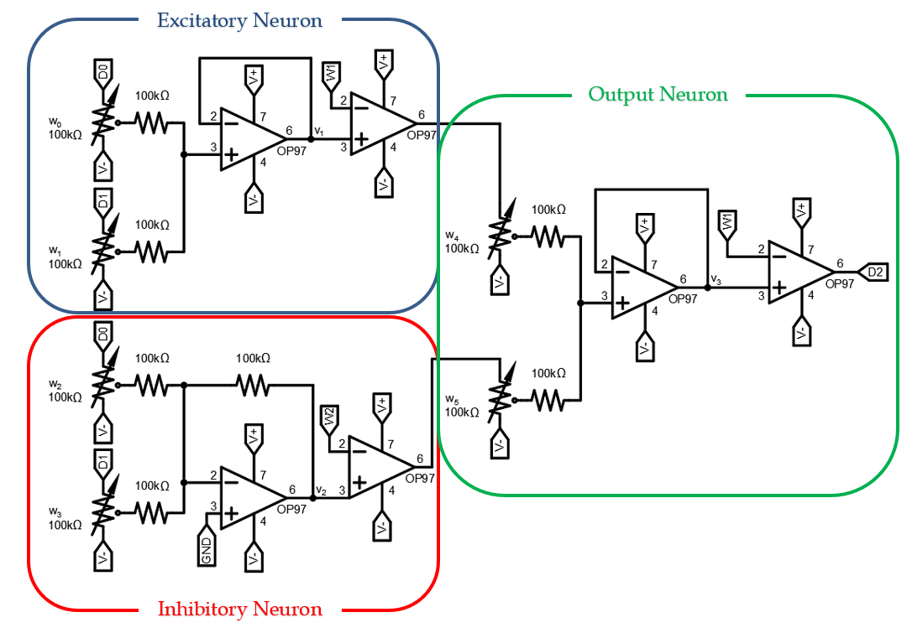

The Analog Neural Network
Contemporary electronic neural networks are a topic of much research. In the last decade, they have
contributed significantly to advances in the fields of computer vision, natural language processing, and many
others. Artificial neural networks (ANN) attempt to mimic the computational structure of the human brain. Much
like neural pathways inside our brains are strengthened, or weakened, to form the basis of memory, cognition,
and learning, the ‘weights’ inside an ANN can be modified using backpropagation during supervised learning.
While the majority of ANNs exist in the digital domain, increasingly by semi-special purpose ICs like the
GPU or TPU, the desire for always-on, low power edge computing has inspired some unique solutions that utilize
analog or mixed-signal neural networks. In this project, I demonstrate how to build and train an artificial
analog neural network that can compute common logic functions.
The biological neuron, shown in figure 1, is the basis of ANNs. The dendrites receive electrical signals
from other neurons. The ‘strength’ of these received signals is controlled by chemicals called
neurotransmitters that exist in the synapse, or gap, between neurons. The cell body of the neuron effectively
sums the received electrical signals. If the sum of these signals crosses a threshold, the neuron will fire,
or activate.
Figure 1. The Biological Neuron
The biological neuron serves as the inspiration for the artificial neuron shown in figure 2. Each input to
the neuron, x0 … xn, is multiplied by a weight, w0 …
wn, and the sum of these products is computed. A bias value, b, is often included in the sum,
but is omitted here for simplicity. The sum is passed through an activation function to determine the output.
In this project, we will use op-amps to realize both the weighted sum calculation and the activation function.
Figure 2. The Artificial Neuron
Figure 3 shows a typical implementation of a shallow feed-forward artificial neural network. Input vector
x is multiplied with a weight matrix, then passed to an activation function to produce y.
Another weight matrix is multiplied with y, then passed through an activation function to calculate the
output values.
Before we can use an ANN, we must train it. Training a neural network means to adjust the weights in
response to error you observe at the output. The conventional method of training a neural network is to use
the backpropagation algorithm. In this
project, we backpropagate the error manually, adjusting the weights in response to an error at the output. For
the simple neural network we will build, it is possible to train the network using a little intuition and
circuit analysis.
Figure 3. Artificial Neural Network
Figure 4 shows the analog neuron that will form the basis of the network we will build. In the figure, DIO 0
& 1 represent 3.3V logic level signals being driven by the Analog Devices Active Learning Module used to test
this circuit. This means that DIO 0 & 1 can toggle between 0 and 3.3V. The circuit uses ±3V supply, but
larger voltage rails are acceptable if your op-amps are rated for it. The circuit uses two potentiometers as
weights for the two inputs. The setting of the potentiometer acts as a voltage divider to set the weight of
the input. The first op-amp computes the weighted sum of the inputs. This is also know as
multiply-and-accumulate (MAC), and is equivalent to the inner product calculation described above.
The second op-amp realizes the activation function. The value at the output of the first op-amp (the
weighted sum) is compared to a threshold that is set by analog output pin W1. For this circuit, W1 was set to
1.2V, though there is a range of voltages that would be acceptabled based on how the weights are set. If that
weighted sum is greater than the threshold, the neuron fires, and the output of the neuron will approach the
positive supply rail. An op-amp configured in this way functions as a comparator and can be referred to as
such.
Our goal is to train the analog neuron to realize the logical AND function. This will require us to toggle the
digital output and adjust the weights manually. We can also analyze the resistive portion of the circuit
(summing amplifier) by using our circuit analysis toolbox: superposition, resistive voltage dividers, KVL, and
KCL. Other variables that we can exercise are the weights, threshold, and supply voltages. The training
procedure for this circuit is such:
- Toggle DIO 0 and DIO 1 and observe how the circuit's output changes.
- For a given set of inputs, try changing the weights one at a time until the output is correct. Then
change the inputs and adjust the weights again, until the output is correct.
- In general, if changing an input seems to contribute to the incorrect answer, try decreasing that
input’s weight. Conversely, if an input seems to contribute to the correct answer, try increasing that
input’s weight.
- Repeat these steps until the circuit produces the logical AND function.
If these steps fail, you can always derive precise weight values analytically. Once the analog neuron has been
built and trained, we can use multiple neurons to build an analog artificial neural network and train more
complex functions.
III. The Analog Neural Network
The Analog Neural Network of figure 5 combines 3 neurons into a 2-layer architecture, that can be trained to
implement more complex functions than a single neuron. We will train the neural network shown here to realize
the logical XOR function. Doing so will be more involved than the single neuron. We will need to study the
circuit closely and understand each component to expedite the training.
Note the different architectures used for the excitatory vs. inhibitory neuron. While similar to the
excitatory neuron that has been discussed thus far, the inhibitory neuron’s inverting configuration consists
of a weighted voltage-summing inverting-amplifier followed by a voltage comparator for activation. The voltage
at the output of the summing amplifier is given by the relationship:
The analog neural network has 6 weights that can be adjusted to implement the XOR function. We are also free
to set the threshold and supply voltages as necessary, though suggestions are provided. To build this circuit,
we used a ±3V supply with threhold voltages of ±1.2V.

Figure 5. Analog Neural Network
The analog neural network was trained using the same process as descibed above. After backpropaging the
error manually and adjusting the weights, the circuit could sucessfully perform the XOR function. I hope this
has been a helpful explanation of how you too could build an analog neural network. I believe that with the
increasing prevalance of neural computing architectures in many of our hand-held devices, it is important to
understand how analog and mixed-signal neural networks provide a high efficiency architecture in
power-contstrained and mobile applications.